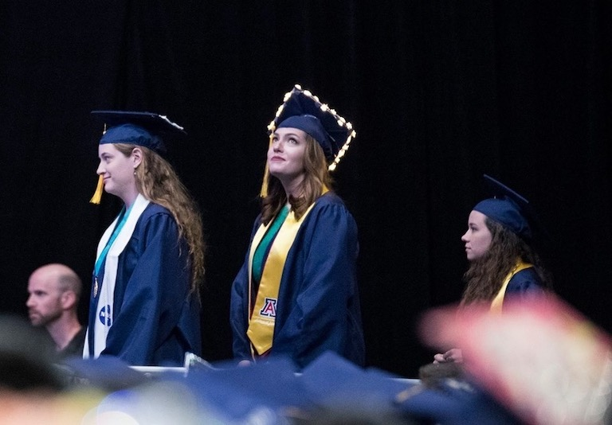
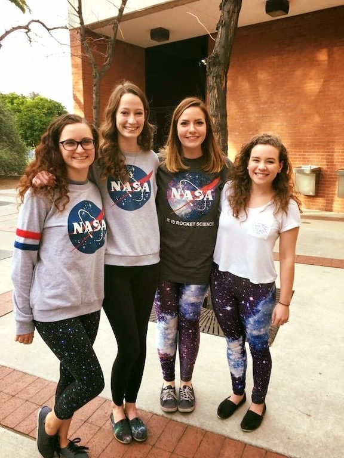
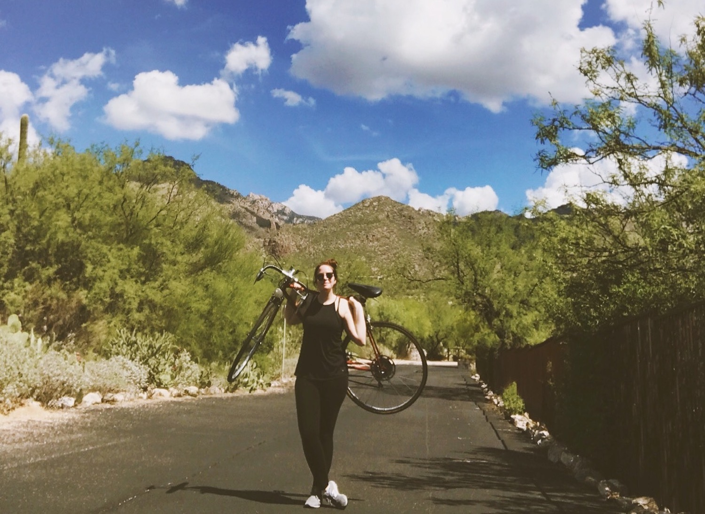

I recently earned my M.S. in Engineering: Data Science from the University of California, Riverside in June 2023, and previously, my Bachelor's in Astronomy from the University of Arizona in May 2018.
I have had a lifelong passion for space, and my love for astrophysics was sparked by watching the 1997 movie adaptation of Carl Sagan's "Contact" at 13. This led me to engage in astronomy outreach at Vanderbilt University's Dyer Observatory, where I led student space camps and operated telescopes. At the University of Arizona, I served as a Student Telescope Operator and eventually Chief Telescope Operator at Steward Observatory, overseeing nightly operations and leading public talks.

Post-graduation in 2018, I joined Apple, initially in hardware and software repairs before transitioning to specialized corporate programs in Data Engineering and Data Science Engineering. In Fall 2021, I left Apple to
begin pursuing my M.S. degree. During my program, I simultaneously worked on research projects at NASA and Lawrence Livermore National Laboratory.
I am currently seeking full-time positions and Ph.D. opportunities for Fall 2024, aiming to further explore the dynamic intersection of data science and astrophysics.

Beyond my professional pursuits, I am deeply engaged in STEM outreach initiatives, and enjoy kayaking, hiking, cycling, digital art, traveling, cooking, watching hockey and Formula 1 racing, and spending time with my partner and family.